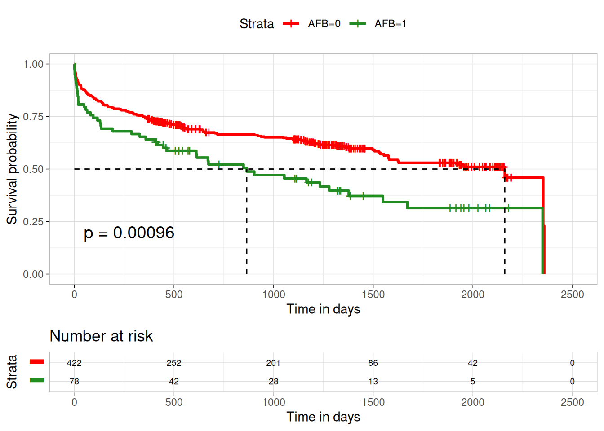
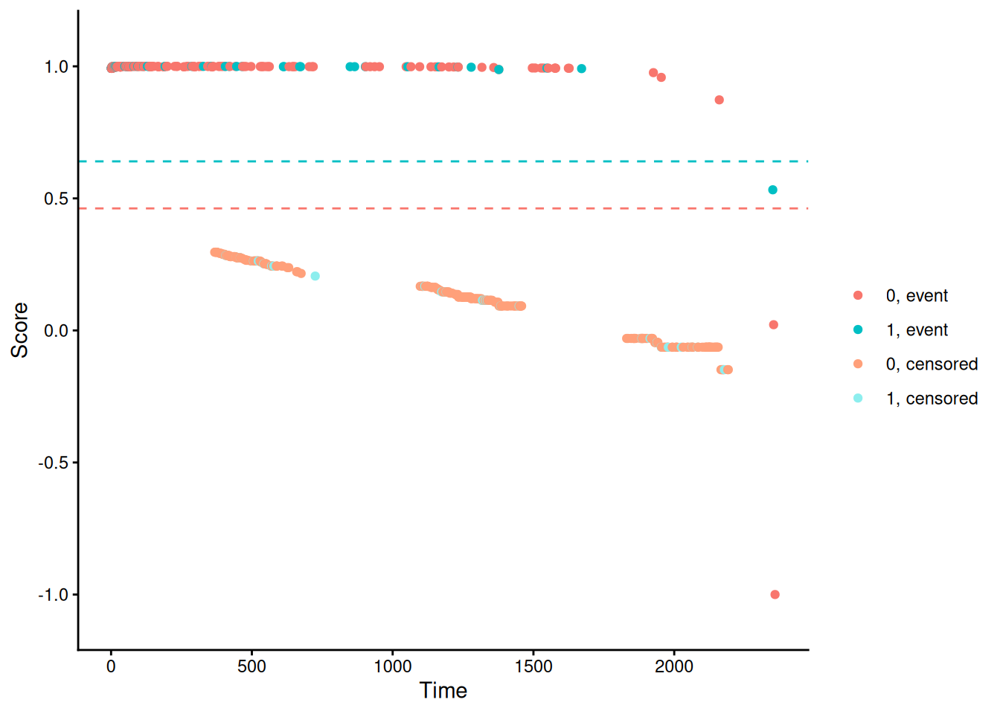

Testing approaches under non-proportional hazards using R
Introduction
In clinical studies with time-to-event outcomes, it is commonly assumed that the hazard functions of two groups are proportional. The standard log-rank test is widely used to test the equivalence of survival functions. It assumes no relationship between the censoring indicator and the forecast, such that dropouts or individuals who are not fully observed are perceived to be the same in risks (sensitivity to proportional risk); the events are also weighted equally regardless of time of occurrence ( early/ late). However, several scenarios can lead to non-proportional hazards (NPH). For example, a delayed treatment effect may be observed in the treatment arm, which can lead to a departure from proportionality of the survival curves. Log-rank test loses power under the non-proportional hazard assumption. Thus, there are many tests available in the literature that can handle such scenarios. Most commonly used tests are as follows:
Weighted log-rank test.
Restricted Mean Survival Time (RMST).
Milestone survival.
Max-Combo test.
Modestly Weighted log-rank test.
This particular document focuses mainly on the weighted log-rank test, Max-combo test and Modestly Weighted log-rank. Some of the functions include:
wlrt()
This function uses \(G(\rho,\gamma)=\hat{S}(t)^\rho (1-\hat{S}(t))^\gamma; \rho,\gamma \geq 0\) , where \(\hat{S}(t)\) is the Kaplan-Meier estimate of the survival function at time \(t\). If \(\rho = \gamma = 0\), then this is the standard log-rank test. When \(\rho=1, \gamma=0\) this test can be used to detect early difference in the survival curves; when \(\rho=0, \gamma = 1\), this test can be used to detect late differences in the survival curves and when \(\rho=1, \gamma = 1\), this test can be used to test middle differences in the survival curves. This is enabled by specifying method=fh in R as illustrated in the Peto-Peto Prentice test below. Also it is to be noted that this test gives the Z-score as the test statistic which can be squared to obtain the chi-square statistic. The function also supports the log-rank test: Method=lr and Modestly Weighted Log-rank test: method=mw.
survdiff()
This function uses \(G(\rho)=\hat{S}(t)^\rho, \rho \geq 0\) , where \(\hat{S}(t)\) is the Kaplan-Meier estimate of the survival function at time \(t\). If \(\rho = 0\), then this is the standard log-rank test.
The data include 500 subjects from the Worcester Heart WHAS Study (WHAS500). This study examined several factors, such as age, gender and BMI, that may influence survival time after a heart WHAS. Follow-up time for all participants begins at the time of hospital admission after the WHAS and ends with death or loss to follow-up (censoring). The data in the WHAS500 are subject to right-censoring only. The variables used here are:
lenfol: length of follow-up, terminated either by death or censoring - time variable
fstat: loss to followup = 0, death = 1 - censoring variable
\(S_1(t)\): survival function for individuals with no atrial fibrillation(AFB=0)
\(S_2(t)\): survival function for individuals with no atrial fibrillation(AFB=1)
Null hypothesis\(H_0\): \(S_1(t) = S_2(t)\quad \text{for all } t\)
Alternative hypothesis\(H_1\): \(S_1(t) \neq S_2(t) \quad \text{for some } t\)
The p-value for the standard log-rank test is 0.00096. Since \(0.00096< 0.05\), we reject the null hypothesis and conclude that there is statistically significant evidence that the survival distributions differ between the AFB groups over time. Individuals with no atrial fibrillation(AFB=0) have higher survival rates after a heart WHAS, compared to those with atrial fibrillation(AFB=1). Immediately after time 0, the curve for AFB=1 drops soon below the curve for AFB=0. This suggests that atrial fibrillation has a strong impact (early effect) on mortality after a heart WHAS.
library(survival) KM <-survfit(Surv(LENFOL, FSTAT)~AFB, data = WHAS)ggsurvplot(KM, data = WHAS, risk.table =TRUE, pval =TRUE, palette =c("red","forestgreen"),conf.int =FALSE, xlim =c(0,2500), xlab ="Time in days", break.time.by =500, ggtheme =theme_light(), risk.table.y.text.col = T, risk.table.y.text =FALSE,risk.table.fontsize=2.5,surv.median.line ="hv")
Warning: Using `size` aesthetic for lines was deprecated in ggplot2 3.4.0.
ℹ Please use `linewidth` instead.
ℹ The deprecated feature was likely used in the ggpubr package.
Please report the issue at <https://github.com/kassambara/ggpubr/issues>.
Ignoring unknown labels:
• colour : "Strata"

Tests:
1. Weighted Log-Rank test.
The Weighted log-rank has been utilised in studies with non-proportional hazards to maximise power. By pre-specifying the weights, type I error is preserved. The choice of weight can be based on initial information or anticipated study design.
Suppose we have two groups (e.g. treatment and control, male and female, etc.) with survival functions \(S_1\) and \(S_2\), respectively. The null and alternative hypotheses are given as: \[H_0 : S_1(t)=S_2(t) \mbox{ }\forall t \mbox{ v/s } H_1 : S_1(t) \neq S_2(t) \mbox{ for some t. }\] Since the alternative hypothesis is composite, it includes multiple scenarios. Hence, the power calculation is difficult to implement. One way to tackle this situation is to consider the Lehman alternative given by \(H_L : S_1(t)=(S_2(t))^\psi\) for all \(t\) where \(0<\psi<1\). Alternatively, \[ H_0 : \psi=1 \ v/s \ H_1: \psi<1\]
which implies subjects in group 1 will have longer survival times than subjects in group 2. For more details, refer to Page 44 of Moore (2016).
The test statistic for the weighted log-rank test is given by, \[ Z = \frac{\sum_{j=1}^{D}w_j(o_{j} -e_j)}{\sqrt{\sum_{j=1}^{D}w_j^2 v_j}} \to N(0,1), \text{under} \ H_0\] Equivalently, \[ Z^2 = \frac{\big[\sum_{j=1}^{D}w_j(o_j -e_j)\big]^2}{\sum_{j=1}^{D}w_j^2 v_j} \to \chi^2_1, \text{under} \ H_0.\]
Here, \(t_1<t_2<...<t_D\) be the distinct failure time points of both the groups together. \(o_j\) is the number of deaths, \(e_j\) is the expected number of deaths, and \(v_j\) is the variance of the number of deaths in either of the two groups.
Different weight functions are discussed in the literature, and a family of weight functions \(G(\rho)\) is proposed by Harrington and Fleming (1982), which is implemented in R using survival : : survdiff (). Further, Fleming and Harrington (1991) extended the \(G(\rho)\) family to \(G(\rho,\gamma)\), and it is implemented in R using nphRCT : : wlrt().
Suppose \(W_k\) is a positive weight function,\(n_k\) is the size of the risk set, and \(S(t_k)\) is the survival function. We can implement these tests by assigning different weights, such that:
- \(W _k\)= 1 [Weight=1] \(\implies\) Log-rank test.
- \(W_k\)= \(n_k\) [weights by risk set size] \(\implies\) Wilcoxon test.
- \(W_k\)= \((n_k)^{1/2}\) [square root of risk set size] \(\implies\) Tarone-Ware test.
- \(W_k\)= \((S(t_k))\) [weights by pooled survival function] \(\implies\) Peto-Peto test.
- \(W_k\)= \((S(t_k))\frac{n_k}{n_k+1}\) [survival weight adjusted by risk set size] \(\implies\) Modified Peto-Peto test.
- \(W_k\)= \(\{S(t_k)\}^{\rho}\{1 - S(t_k)\}^{\gamma}\) [flexible survival-based weighting] \(\implies\) Fleming-Harrington(\(\rho,\gamma\)) test.
a). Peto-Peto
This test assigns weights based on the pooled Kaplan–Meier survival estimate\((S(t_k))\). Larger weights are assigned to earlier failures, thereby enabling greater emphasis on group differences at earlier times. This test can be implemented in R using these functions:
i) survminer::surv_pvalue()
The survminer::surv_pvalue() function calculates the p-value for comparing survival curves, while surv_fit() estimates the survival probabilities for groups defined by AFB. Using surv_pvalue(method = "S1") applies the Peto–Peto test via the survMisc package to assess group differences. The survMisc package (version 0.5.6) provides a collection of functions for analysing right-censored survival data, extending the methods available in the survival package. In particular, the comp function can be used to compare survival curves and print the corresponding p-value. Note that survMisc was archived on March 17, 2026, and is no longer available on CRAN.
fit <-surv_fit(Surv(LENFOL, FSTAT)~AFB, data = WHAS)surv_pvalue(fit,method ="S1")
# Extending the decimal places for the p-valuep<-surv_pvalue(fit, method="S1")$pvalsprintf("%.9f", p)
[1] "0.001700000"
The code below generates the test statistics for Peto-Peto using custom R function. The implementation is based on a classical statistical definition without reliance on external packages. survminer::surv_pvalue() rounds off the p-value to 4 decimal places internally. This is why extending the p-value manually yields zeros beyond the 4 decimal places. Rounding off the custom R p-values to 4 decimal places, generates p-values similar to those from survminer::surv_pvalue() . The custom R function also generates the chi-square test statistic, which is not enabled by the survminer package.
peto_peto_test <-function(formula, data) { mf <- stats::model.frame(formula, data) surv <- mf[[1]] time <- surv[, "time"] status <-ifelse(surv[, "status"] ==2, 1, surv[, "status"]) group <-as.factor(mf[[2]]) groups <-levels(group) event_times <-sort(unique(time[status ==1])) k <-length(event_times) # number of event times g <-length(groups) # number of groups# Risk set and event count matrices n_jk <- d_jk <-matrix(0, k, g)for (j inseq_len(g)) { t_j <- time[group == groups[j]] s_j <- status[group == groups[j]]for (i inseq_len(k)) { ti <- event_times[i] n_jk[i, j] <-sum(t_j >= ti) d_jk[i, j] <-sum(t_j == ti & s_j ==1) } }# Totals n_i <-rowSums(n_jk) d_i <-rowSums(d_jk) w <-cumprod(1- d_i / (n_i +1)) # ---- Peto-Peto weights (S1) ----# ---- 2-group test ---- e1 <- n_jk[, 1] * d_i / n_i Q <-sum(w * (d_jk[, 1] - e1)) VarQ <-sum( w^2* n_jk[, 1] * n_jk[, 2] * d_i * (n_i - d_i) / (n_i^2* (n_i -1)),na.rm =TRUE ) chisq <- (Q^2) / VarQ pvalue <- stats::pchisq(chisq, df =1, lower.tail =FALSE)list(chisq = chisq,df =1,pvalue = pvalue,method ="Peto-Peto (S1)" )}peto_peto_test(Surv(LENFOL, FSTAT)~AFB, data = WHAS)
coin package implements a conditional inference framework based on permutation tests. The log-rank test is one of the conditional test procedures that provides the weighted log-rank test reformulated as a linear rank test. The p-value is obtained from the conditional null distribution of the test statistic, and the asymptotic approximation of the exact distribution is used by default (distribution="Asymptotic"). The distribution can also be approximated via Monte Carlo resampling or computed exactly for the univariate two-sample problem by specifying the distribution as approximate or exact, respectively.
#AsymptoticWHAS$AFB <-as.factor(WHAS$AFB)logrank_test(Surv(WHAS$LENFOL, WHAS$FSTAT) ~ AFB, data = WHAS,type ="Peto-Peto",distribution ="asymptotic")
Asymptotic Two-Sample Peto-Peto Test
data: Surv(WHAS$LENFOL, WHAS$FSTAT) by AFB (0, 1)
Z = 3.0423, p-value = 0.002348
alternative hypothesis: true theta is not equal to 1
For exact distribution, computing exact permutation distribution was computationally intensive in this case and demanded large memory, hence returned an error. This can be due to many events as well as large sample size, which makes the computation combinatorialy intensive.
#Exact#logrank_test(Surv(LENFOL,FSTAT) ~ AFB, data = WHAS,#type = "Peto-Peto",#distribution = "exact")
approximate distribution uses Monte Carlo re-sampling to approximate the distribution.
#Approximatelogrank_test(Surv(LENFOL,FSTAT)~AFB, data = WHAS,type ="Peto-Peto",distribution ="approximate")
Approximative Two-Sample Peto-Peto Test
data: Surv(LENFOL, FSTAT) by AFB (0, 1)
Z = 3.0423, p-value = 0.0018
alternative hypothesis: true theta is not equal to 1
iii) survival::survdiff()
survival::survdiff() tests if there is a difference between two or more survival curves using the \(G^\rho\) family of tests, or for a single curve against a known alternative and with \(\rho\)=1, it is equivalent to the Peto & Peto modification of the Gehan-Wilcoxon test. The p-value generated is 0.0016528 . survminer::surv_pvalue() generates a p-value of 0.0017 for the same test. This subtle difference can be caused by the fact that these two functions: survival::survdiff(rho = 1) implements the \(G^\rho\) test with weights \(S(t)^\rho\), whereas survminer:: surv_pvalue() test uses weight of a modified pooled survival estimate S1. Mathematically, these methods can be represented as:
Assume : \(t_i\) for \(i=1,…,T\) are possible event times, \(n_{ti}\)is the overall risk set size on the time\(t_i\), \(e_{ti}\)number of overall expected events in the time\(t_i\) and \(w{t_i}\) is a weight for the statistic, then S1Peto-Peto’s modified survival estimate: \[
w(t_i) = \hat{S}_1(t_i) = \prod_{t_i = 1}^{T} \left(1 - \frac{e_{t_i}}{n_{t_i} + 1} \right)
\]
The survdiff function uses \(G(\rho)=\hat{S}(t_i)^\rho, \rho \geq 0\) , where \(\hat{S}(t_i)\) is the Kaplan-Meier estimate of the survival function at time \(t_i\).
Asymptotic Two-Sample Andersen-Borgan-Gill-Keiding Test
data: Surv(LENFOL, FSTAT) by AFB (0, 1)
Z = 3.0276, p-value = 0.002465
alternative hypothesis: true theta is not equal to 1
c). Tarone-Ware.
i). survminer::surv_pvalue()
It balances sensitivity between early and late differences. The survdiff() function implements the \(G(\rho)\) family with parameter \(\rho\) but does not include the Tarone-Ware option; Tarone-Ware weight is proportional to \(\sqrt{n_k}\), which is not of the \(\hat{S}(t)^\rho\) family; therefore, it should not be implemented as rho= option. Therefore, in this function, there is no inbuilt implementation of Tarone-Ware option, although some analysts approximate it by suggesting \(\rho\)= 0.5, such that it assigns weights between standard log_rank (\(\rho\)= 0) and tests that emphasise on early events like Gehan-Breslow. For this document, computation is based on the definition of Tarone-Ware, which is weighted by taking the square root of the risk set \(\sqrt{n_k}\). This is possible to define in the survminer package.
The survminer package enables R functions for visualisation and survival analysis. survminer::surv_pvalue() function enables one to specify the weight sqrtN for Tarone-Ware in R. This outputs only the p-value of the specified test. The package does not have an inbuilt function to generate the test statistic.
fit<-survfit(Surv(LENFOL, FSTAT)~AFB, data = WHAS)surv_pvalue(fit,method="sqrtN")
Asymptotic Two-Sample Tarone-Ware Test
data: Surv(LENFOL, FSTAT) by AFB (0, 1)
Z = 2.9636, p-value = 0.003041
alternative hypothesis: true theta is not equal to 1
d). Gehan-Breslow.
i). survminer::surv_pvalue()
The survdiff() function implements the \(G(\rho)\) family with parameter \(\rho\) but does not include Gehan-Breslow; Gehan-Breslow weight is proportional to \(n_k\), which is not of the \(\hat{S}(t)^\rho\) family; therefore, it is not implemented as rho= option. Therefore, there is no inbuilt implementation of the Gehan-Breslow option, although some analysts approximate it by suggesting \(\rho\)=1 such that it assigns weights by emphasising on early events. Here, we make a consideration based on the definition of Gehan-Breslow, which is weighted by taking the total risk set \(n_k\). survminer::surv_pvalue() function enables one to specify the weight n for Gehan-Breslow in R. This outputs only the p-value of the specified test. The package does not have an inbuilt function to generate the test statistic.
fit<-survfit(Surv(LENFOL, FSTAT)~AFB, data = WHAS)library(survminer)surv_pvalue(fit,method="n")
# Extending the decimal places for the p-valuep<-surv_pvalue(fit, method="n")$pvalsprintf("%.9f", p)
[1] "0.004100000"
The same custom R function is modified and implemented for the Gehan-Breslow Weighted Log-rank test. This procedure provides a similar p-value as that of survminer::surv_pvalue() but again outputs the test statistic, which is not enabled by survminer package.
Asymptotic Two-Sample Gehan-Breslow Test
data: Surv(LENFOL, FSTAT) by AFB (0, 1)
Z = 2.7863, p-value = 0.005331
alternative hypothesis: true theta is not equal to 1
e). Fleming-Harrington
i). nphRCT::wlrt()
This test is implemented using the function wlrt() from the nphRCT package. This function uses \(G(\rho,\gamma)=\hat{S}(t)^\rho (1-\hat{S}(t))^\gamma; \rho,\gamma \geq 0\) (Fleming-Harrington test), where \(\hat{S}(t)\) is the Kaplan-Meier estimate of the survival function at time \(t\). When \(\rho=1, \gamma=0\), this test can be used to detect early differences in the survival curves. To obtain the corresponding \(p\)-value, we can either use 2(1-pnorm(abs(ppp$z),0,1)) or we can square the test statistic WL$z by using (ppp$z)^2 and obtain the corresponding \(p\)-values as 1 - pchisq((ppp$z)^2,1); both the \(p\)-values will be the same.
#Places weight on hazards in the middle of the study.(ppp <- nphRCT::wlrt(survival::Surv(LENFOL, FSTAT)~AFB, data = WHAS,method ="fh",rho =0.5,gamma =0.5 ))
#Places weight on hazards in the middle of the study.(ppp <- nphRCT::wlrt(survival::Surv(LENFOL, FSTAT)~AFB, data = WHAS,method ="fh",rho =1,gamma =1 ))
#Places weight on hazards at the end of the study.(ppp <- nphRCT::wlrt(survival::Surv(LENFOL, FSTAT)~AFB, data = WHAS,method ="fh",rho =0.5,gamma =2 ))
#Places weight on hazards at the beginning of the study.(ppp <- nphRCT::wlrt(survival::Surv(LENFOL, FSTAT)~AFB, data = WHAS,method ="fh",rho =1,gamma =0 ))
#Places weight on hazards in the middle of the study.logrank_test(Surv(LENFOL, FSTAT)~AFB, data = WHAS,type ="Fleming-Harrington", rho =0.5, gamma =0.5,distribution ="asymptotic")
Asymptotic Two-Sample Fleming-Harrington Test
data: Surv(LENFOL, FSTAT) by AFB (0, 1)
Z = 3.0582, p-value = 0.002226
alternative hypothesis: true theta is not equal to 1
#Places weight on hazards in the middle of the study.logrank_test(Surv(LENFOL, FSTAT)~AFB, data = WHAS,type ="Fleming-Harrington", rho =1, gamma =1,distribution ="asymptotic")
Asymptotic Two-Sample Fleming-Harrington Test
data: Surv(LENFOL, FSTAT) by AFB (0, 1)
Z = 2.972, p-value = 0.002958
alternative hypothesis: true theta is not equal to 1
#Places weight on hazards at the end of the study.logrank_test(Surv(LENFOL, FSTAT)~AFB, data = WHAS,type ="Fleming-Harrington", rho =0, gamma =1,distribution ="asymptotic")
Asymptotic Two-Sample Fleming-Harrington Test
data: Surv(LENFOL, FSTAT) by AFB (0, 1)
Z = 2.9256, p-value = 0.003438
alternative hypothesis: true theta is not equal to 1
#Places weight on hazards at the end of the study.logrank_test(Surv(LENFOL, FSTAT)~AFB, data = WHAS,type ="Fleming-Harrington", rho =0.5, gamma =2,distribution ="asymptotic")
Asymptotic Two-Sample Fleming-Harrington Test
data: Surv(LENFOL, FSTAT) by AFB (0, 1)
Z = 2.7163, p-value = 0.006601
alternative hypothesis: true theta is not equal to 1
#Places weight on hazards at the beginning of the study.logrank_test(Surv(LENFOL, FSTAT)~AFB, data = WHAS,type ="Fleming-Harrington", rho =1, gamma =0,distribution ="asymptotic")
Asymptotic Two-Sample Fleming-Harrington Test
data: Surv(LENFOL, FSTAT) by AFB (0, 1)
Z = 3.0423, p-value = 0.002348
alternative hypothesis: true theta is not equal to 1
Summary results for Weighted log-rank test.
Note: coin::logrank_test() - Default distribution is asymptotic. Generates \(Z\) test statistic. \(Z^2 = \chi^2_{(1)}\)
Test
Function
Chi-square
P-Value
Peto - Peto
survminer: : surv_pvalue()
Null
0.0017
custom R function
9.823786
0.001722693
coin: : logrank_test()-asymptotic distribution
\(Z\)=3.0423
\(Z^2\)=9.2556
0.002348
coin: : logrank_test()- approximate distribution
\(Z\)=3.0423
\(Z^2\)=9.2556
0.0022
survival: : survdiff()
9.9
0.001652766
Modified Peto-Peto
survminer: : surv_pvalue()
Null
0.0018
custom R function
9.749083
0.001794122
coin: : logrank_test()
\(Z\)=3.0276
\(Z^2\)=9.1664
0.002465
Tarone-Ware
survminer: : surv_pvalue()
Null
0.00021
custom R function
9.42297
0.002142842
coin: : logrank_test()
\(Z\)= 2.9636
\(Z^2\)=8.7829
0.003041
Gehan- Breslow
survminer: : surv_pvalue()
Null
0.0041
custom R function
8.259274
0.004054433
coin: : logrank_test()
\(Z\)=2.7863
\(Z^2\)=7.7635
0.005331
Fleming-Harrington
nphRCT: : wlrt()
FH(0.5, 0.5)
10.3122
0.0013
FH(1, 1)
9.8019
0.0017
FH(0, 1)
9.5455
0.002
FH(0.5, 2)
8.2428
0.0041
FH(1,0
9.9
0.0017
coin: : logrank_test()
FH(0.5, 0.5)
\(Z\)=3.0582 \(Z^2\)=9.3526
0.002226
FH(1, 1)
\(Z\)=2.972 \(Z^2\)=8.8327
0.002958
FH(0, 1)
\(Z\)=2.9256 \(Z^2\)=8.5591
0.0034938
FH(0.5, 2)
\(Z\)=2.7163 \(Z^2\)=7.3783
0.006601
FH(1, 0)
\(Z\)=3.0423 \(Z^2\)=9.2556
0.002348
2. Max-Combo test.
i). Max-Combo(No strata)
This is a universal criterion for examining the proximity of the survival functions, especially when no initial information about the trial is available. It combines multiple weighted log-rank criteria to enable sensitivity for equally, early, middle and late differences concurrently, such that it defines the maximum of the \(G^{0,1}\) and \(G^{1,0}\) criteria. It is also suitable when there is a violation of the proportional hazard assumption and uncertainty about the distribution of survival time.
The combination test aims for strong power to realise the survival curves difference over a range of possible alternative hypotheses. R software performs the combination test with an option to assign any set of weights using the function logrank.maxtest() from the nph package for comparison of two groups. logrank.maxtest() defaults to a two‑sided hypothesis, especially when no choice is made between the three in the alternative argument: alternative=c("two.sided", "less", "greater"). For this case, we specified to "two.sided". mvtnorm::GenzBretz() calls the Genz–Bretz algorithm, a quasi-Monte Carlo method, which introduces randomness in each run; this generates slightly varying values for the unadjusted p-value in each run. Therefore, there is a need to use set.seed() for reproducibility. Max-Combo two-sided statistic is defined as \(Z_{\max} = \max(|Z_1|, |Z_2|, \ldots, |Z_k|)\). Therefore \(Z_{\max}\)= 3.30, and the two-sided unadjusted p-value is: 0.00196\(\approx\) 0.002. Bonferroni corrected p-value is 0.00385.
Through the R package strata.MaxCombo using the function SMCtest(), the Max-Combo test can account for stratified baseline factors. Unlike in Max-Combo, SMCtest is almost certainly written to accept only one value for alternative, not multiple. Based on this article, referenced in strata.MaxCombo::SMCtest documentation, there are three versions of stratified weighted logrank test, which include: combining within-strata information on the \(U\)-statistic scale, \(Z\)-statistic scale and \(N\)-statistic scale. They differ only in terms of the definition of \(W_{ij}\)(time dependent weight assigned to each event contribution). \(U\)-statistic is the weighted sum of observed minus expected events. These three versions are defined in R package documentation as stratification methods 1,2 and 3. z.list is a vector of z values calculated from all stratified weighted log-rank tests under stratification method 1. z.max gives the z value that is the furthest away from 0 under stratification method 1. pval p-value of the desired alternative test under stratification method 1. cov is the covariance matrix of different startified weighted log-rank tests under stratification method 1. The test of hypothesis can be specified in the alternative=c() argument. For this case, two-sided hypothesis is used. Otherwise you can specify less or greater as well.
Max-Combo test is prone to counter-intuitive results, for instance, in cases where treatment is uniformly worse than control, Max-Combo can still offer a high chance of rejecting the null hypothesis, favouring treatment. Magirr, D. and Burman developed the Modestly Weighted Log-rank test to counter this issue (type I error control). It is designed for scenarios with delayed treatment effects, as it gives greater weight to later event times. However, the weighting is controlled (“modest”) so that an early worsening of the experimental arm is not overly penalised. In scenarios where the treatment effect appears early and diminishes over time, this test tends to lose sizeable power compared with the standard log‑rank test.
i). Modestly Weighted Log-rank test(No strata)
Modestly Weighted Log-Rank is implemented in R using the function wlrt() from the nphRCT package by specifying method="mw". t* and s* are parameters that control when the test starts assigning full weight to events. They are designed for delayed treatment effects.
t*\(\implies\) Start assigning full weight after this time.
s*\(\implies\) Start assigning full weight after this survival probability level.
Leton and Zuluaga (2001) illustrated that every weighted log-rank test can be written as either an observed-minus-expected test or as a permutation test. The weights can be reformulated as scores for a permutation test. The scores are obtained from the nphRCT::find_scores function. Plotting these scores against the rank of the event times provides an intuitive understanding of how the weighting operates in the modestly weighted log‑rank test, since the event scores decrease with time, as illustrated by Magirr(2021). Censoring score naturally reduces with time, since it is a negative cumulative sum of increasing weights.
Warning: `aes_string()` was deprecated in ggplot2 3.0.0.
ℹ Please use tidy evaluation idioms with `aes()`.
ℹ See also `vignette("ggplot2-in-packages")` for more information.
ℹ The deprecated feature was likely used in the nphRCT package.
Please report the issue to the authors.

ii). Stratified Modestly Weighted Log-Rank Test (Stratified MWLRT)
A modestly weighted log-Rank test statistic can be computed separately for the two strata. Here, the stratifying variable is GENDER. The combined test statistic is obtained by combining stratum-specific standardised Z-statistics on the Z-scale using a variance-weighted combination as discussed in Magirr and Jiménez (2022).